Surveillance Topology & Inference Pipeline
Low-latency video stream decoding and real-time object/facial recognition pipeline integrated across local edge hardware.

End-to-End Inference & Event Execution Lifecycle
- RTSP Stream Ingestion: Frigate container pulls live camera feeds via RTSP, where hardware-accelerated decoding processes video frames and performs initial object detection.
- MQTT Event Trigger: Upon detecting an object or target class, Frigate fires an initial MQTT Event Trigger payload to Double-Take (Unified Face Processor).
- HTTP Snapshot Request: Double-Take queries Frigate via an HTTP Snapshot Request to retrieve high-resolution bounding box image crops.
- HTTP POST Image (Face Crop): Double-Take forwards the extracted facial snapshot via an HTTP POST request to the custom FastAPI / DeepStack-spec container running on a dedicated Jetson Xavier node.
- Model Inference & JSON Response: The InsightFace Inference Engine running on NVIDIA hardware executes facial vector comparison and returns a JSON Response containing verified names and confidence percentages.
- MQTT Match Result & Automation: Double-Take processes the match data and dispatches an MQTT Match Result payload to Home Assistant to trigger real-time automation routines, security alerts, and event dashboards.
Multi-Host Infrastructure & Architecture Highlights
Proxmox VE Microservice Isolation
Runs unprivileged Linux Containers (LXC) to isolate Frigate NVR, Double-Take, and Home Assistant microservices. This preserves hypervisor resources while maintaining low-latency network I/O and event routing across virtual interfaces.
Hardware-Accelerated Edge Offloading
Offloads heavy CUDA/TensorRT matrix calculations and facial recognition workloads to a dedicated NVIDIA Jetson Xavier host running Docker Compose.
Custom API Interoperability
Implements a custom FastAPI / DeepStack-spec wrapper around InsightFace in Python, enabling seamless API integration with Double-Take while maintaining real-time inference speed on edge hardware.